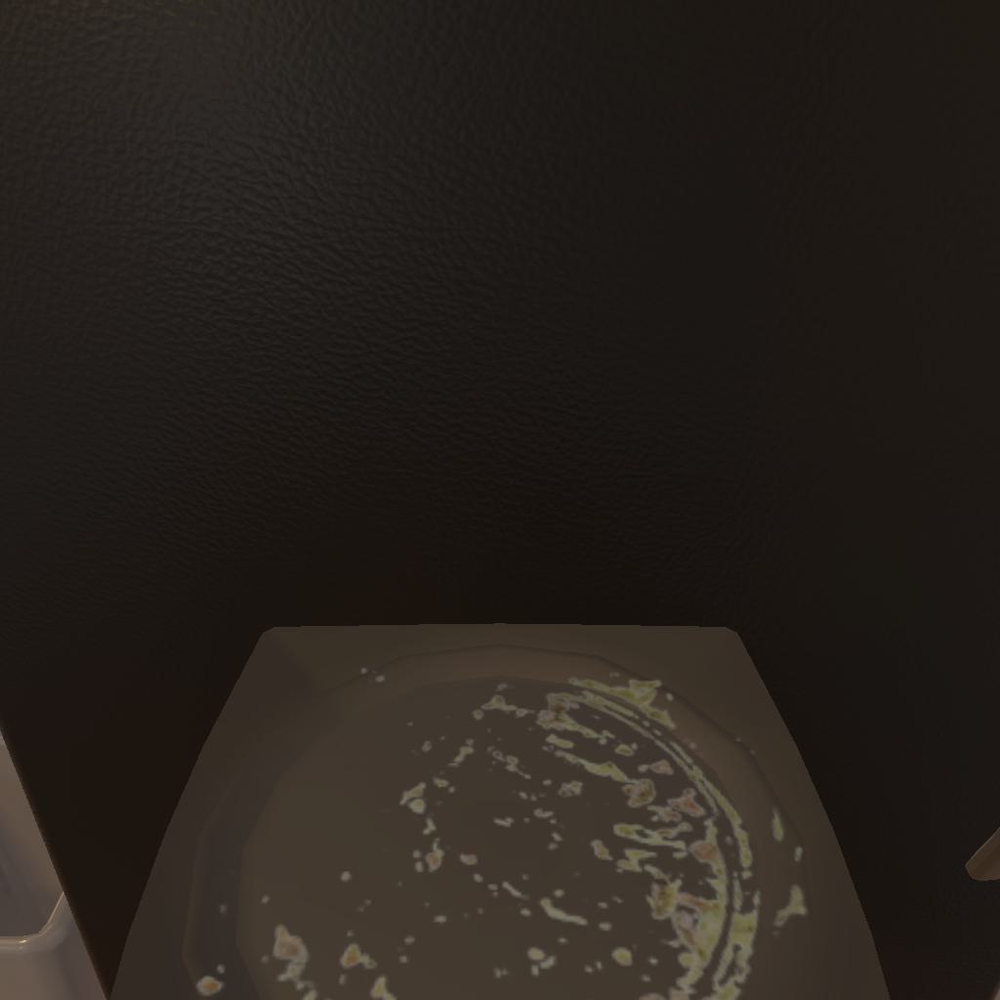

---------------------------------------------------------task: 13---------------------------------------------------------
--------------------------------------------------------------------------------------------------------------------------------------------------------------------
--------------------------------------------------------------------------------------------------------------------------------------------------------------------
Step:--------------------------------------------------------------------------19-------------------------------------------------------------------------------
----------------------------------------
VLM Prompt:
Image1:
**Instruction**
1. Analyze the provided image to identify all visible household objects, focusing on those relevant to the task description "clean some tomato and put it in garbagecan."
2. Use the analysis of the image and the task hint "The agent must find an object of the desired type, pick it up, go to a sink or a basin, clean the object with a sink or basin, and then find the correct location to place it and put it down there. The agent does not need to use soap bottle or faucet to clean the object, and the agent just needs to do action that is "clean the object with the sink or sink basin"." to answer the question: what is the most reasonable action in the choices for the task description "clean some tomato and put it in garbagecan"?
4. Decide and write the answer using the template: The answer is: (i): , where i is the real number. If there is no desired object in the image, search every place based on **Initial Observation** to find the object. And if no one is exactly correct, choose a similar answer.
**Initial Observation**
You are in the middle of a room. Looking quickly around you, you can see countertop (1-2), cabinet (1-11), garbagecan (1), toaster (1), sinkbasin (1), fridge (1), sink (1), microwave (1), drawer (1-3), stoveburner (1-4), coffeemachine (1), diningtable (1)
**Answer Choices**
(1): go to cabinet 1
(2): go to cabinet 2
(3): go to cabinet 3
(4): go to garbagecan 1
(5): go to cabinet 4
(6): go to toaster 1
(7): go to sinkbasin 1
(8): go to sink 1
(9): go to cabinet 5
(10): go to microwave 1
(11): go to countertop 2
(12): go to cabinet 6
(13): go to cabinet 7
(14): go to drawer 1
(15): go to stoveburner 1
(16): go to stoveburner 2
(17): go to cabinet 8
(18): go to drawer 2
(19): go to stoveburner 3
(20): go to stoveburner 4
(21): go to coffeemachine 1
(22): go to cabinet 9
(23): go to cabinet 10
(24): go to cabinet 11
(25): go to diningtable 1
(26): go to drawer 3
(27): open fridge 1
(28): close fridge 1
(29): put plate 1 in/on fridge 1
(30): cool plate 1 with fridge 1
(31): examine plate 1
(32): examine fridge 1
**Answer**
Let's think step by step by following the instructions.
----------------------------------------
----------------------------------------
Original Response:
The task is to clean some tomato and put it in the garbage can. From the initial observation, we know there is a sink and sinkbasin available for cleaning. The image provided shows a plate with some residue on it, which could possibly be from the tomato.
Based on the task description, the agent must first find the tomato to clean. Since there is no tomato visible in the image, the agent needs to search for it. The most likely places to find a tomato would be in the fridge, on the countertop, or in a cabinet where fresh produce might be stored.
The answer is: (27): open fridge 1. This action is chosen because the fridge is a common place to store tomatoes, and it is necessary to check inside for the object needed to complete the task. If the tomato is not found in the fridge, the agent should then search the countertop and cabinets.
----------------------------------------
----------------------------------------
>>> Refine Original VLM Response and Get Pure Action: open fridge 1
----------------------------------------
-----------------------------------------------------------------
Running time: 8.91301941871643 seconds
Total Money: 4.2241
-----------------------------------------------------------------
-----------------------------------------------------------------
Text Observation:You open the fridge 1. The fridge 1 is open. In it, you see a bread 2, a cup 1, a tomato 1, and a cup 2.
-----------------------------------------------------------------
UNSUCCEED